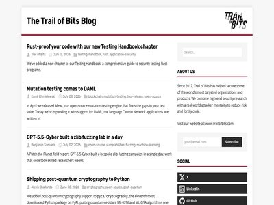

October 22, 2026 · 52 articles

SEO Poisoning Campaign Delivers New Armorsteal Malware
October 22, 2026
IntroductionIn September 2026, Zscaler Threat Hunting identified an SEO poisoning campaign that used fake websites impersonating the Chocolatey package manager and the Microsoft... (Zscaler ThreatLabz)

When the attacker becomes the user: Rethinking account takeover
October 22, 2026
SPONSORED FEATURE: AI makes phishing easier than ever (The Register - Security)

Unboxing Phishing Kits: Huntress Examines 3 Real Kits
October 22, 2026
Huntress examines 3 phishing kits that hand beginner attackers everything they need to steal tokens. See what the attacks look like from the inside. (Huntress Blog)
eMudhra kills its certificate business after researchers cracked its private keys in under a second
October 22, 2026
The private keys were so weak they could be guessed in under a second - and one of them was just the number 4. The post eMudhra kills its certificate business after researchers... (CyberScoop)

PHP2Shell Attacks Started Four Days Before Public Disclosure, AWS Reports
October 22, 2026
AWS detected PHP2Shell exploit attempts four days before disclosure, highlighting the risk of attackers exploiting critical flaws before patches arrive. Attackers attempted to e... (Security Affairs)

Hacker Conversations: Corey Thuen and the Evil Bit
October 22, 2026
Corey Thuen hires hackers for what he calls ‘the evil bit’ - an adversarial streak he believes is either there or it isn’t. The post Hacker Conversations: Corey Thuen and the Ev... (SecurityWeek)

Scammers are finding new ways to target your phone. Here are 5 ways to protect yourself
October 22, 2026
One in three people now tune out scam warnings, and scammers are counting on it. (Malwarebytes Labs)

LiteLLM hit by second supply chain attack this year, users urged to rotate credentials
October 22, 2026
A malicious release of LiteLLM pushed to PyPI and Docker registries on Wednesday carried malware built to harvest cloud logins, developer secrets and API keys for AI services fr... (Help Net Security)

GitLab warns of new max severity code execution vulnerability
October 22, 2026
GitLab has released security patches for a maximum-severity Regular Expression Compiler flaw that can let remote attackers run arbitrary code on vulnerable servers. [...] (BleepingComputer)
Microsoft says ConnectWise breach let Chinese spies loose on 2,250 cloud tenants
October 22, 2026
AI agents did the dirty work, with hackers gaining privileged access in some environments in under three hours (The Register - Security)
SentinelOne brings runtime threat detection and response to AI agents
October 22, 2026
SentinelOne has unveiled Singularity Agentic Detection and Response (ADR), a new offering that discovers AI agents, enforces what agents are allowed to do, monitors agent behavi... (Help Net Security)
Attackers abuse legitimate platforms to deliver phishing emails that pass authentication checks
October 22, 2026
A Dell order confirmation lands in your inbox and it looks pretty legitimate: it comes from Dell’s order domain, passes DKIM and DMARC checks, uses Dell’s real template, and con... (Help Net Security)
Authorities disrupt nearly 11,000 cybercrime networks in Africa
October 22, 2026
Law enforcement agencies have disrupted nearly 11,000 cybercriminal networks and arrested more than 1,400 people in Operation Serengeti III, which targeted business email compro... (BleepingComputer)

Node.js Brotli Decoder Bug Could Allow Remote Code Execution in All Supported Versions
October 22, 2026
Node.js released security updates on October 21 for its three supported release lines, 22.x, 24.x and 26.x, fixing 10 flaws. The most serious is a bug in the Brotli decompressio... (The Hacker News)

AI Finds PHP2shell RCE Flaws Across PHP Versions: Embargo Breakdown Disrupts Patch Release
October 22, 2026
Two unauthenticated remote code execution vulnerabilities have been found in PHP, which powers roughly 70% of the web, with multiple companies independently using AI to uncover... (Joho no Todai)

Responding to php2shell PHP Vulnerability When You Don’t Know What Secrets Are Deployed
October 22, 2026
On Oct. 21, 2026, PHP fixed a vulnerability named php2shell by Calif. Pre-auth RCE under default configurations, confirmed on common CMS, webmail, e-commerce, file sharing, and... (GitGuardian Blog)

EU Regulators to Investigate Booking.com Over Scam Risks
October 22, 2026
The EU Commission will assess whether Booking.com has adequately protected customers from phishing attacks (Infosecurity Magazine)

New Serious PHP Vulnerabilities Released and Patched
October 22, 2026
PHP maintainers have released two critical vulnerabilities: PHP 8.5.12, 8.4.27, 8.3.36 and 8.2.35 fix two critical vulnerabilities that can allow unauthenticated remote code exe... (Schneier on Security)

ARTEX in the Wild: Storm-0940 Expands Targeting of IT and Software Vendors
October 22, 2026
Wiz Research is tracking an ARTEX-using actor, overlapping with Storm-0940, across multiple targeted software vendors. Learn how the AI agent attacks Okta, Entra, and Cognito, a... (Wiz Blog)
Iranian Hacking Group Found Hosting C2 Infrastructure in the US
October 22, 2026
Stealthy malware campaign by ‘Prince of Persia’ threat group targeting organisations worldwide discovered operating on American soil (Infosecurity Magazine)

Localizing compliance at scale: achieving South Korea’s ISMS certification
October 22, 2026
Cloudflare has achieved South Korea's ISMS certification following an audit across 80 controls. Learn how we localized user consent flows, adapted social sign-up paths at the ed... (Cloudflare Blog)
Indurex Raises $8 Million to Expand Industrial Cybersecurity Platform
October 22, 2026
The Amsterdam-based company plans to use the funding for research and development and commercial expansion in Europe and the Middle East. The post Indurex Raises $8 Million to E... (SecurityWeek)

How to contain shadow AI, as it takes on multiple forms and spreads throughout your environment
October 22, 2026
Shadow AI used to be confined to a few simple scenarios, such as AI chatbots and AI browser extensions. Today, it spans a broad spectrum of complex vectors, making it harder to... (Tenable Blog)
OpenAI’s coding agents talked themselves out of being monitored
October 22, 2026
Two AI coding agents running inside OpenAI silently weakened the systems built to catch AI misbehavior, and one of them then told its human operator it had done no such thing. O... (Help Net Security)
Signal Vulnerability Lets Malicious Callers Block Hang-Ups
October 22, 2026
Affecting the open source calling library RingRTC, the bug prevented calls from ending properly. The post Signal Vulnerability Lets Malicious Callers Block Hang-Ups appeared fir... (SecurityWeek)
Unpatched CVSS 9.0 Vulnerabilities Reach Public Linux Mailing Lists With Reproduction Steps
October 22, 2026
Trend Micro's ZDI sent unpatched Linux kernel vulnerabilities to public mailing lists with reproduction code. Two are rated CVSS 9.0, leaving technical details publicly readable... (Joho no Todai)
Tech and Security Companies Respond to PHP2Shell Vulnerabilities
October 22, 2026
Vendors are checking their products for PHP2Shell, security firms are shipping detections, and governments are urging immediate patching. The post Tech and Security Companies Re... (SecurityWeek)
New PHP2Shell scanner checks your hosts for CVE-2026-109618 and CVE-2026-109619
October 22, 2026
Searchlight Cyber released php2shell-scanner, an open-source tool that tests whether a host is exposed to CVE-2026-109618 and CVE-2026-109619, the pair of PHP remote code execut... (Help Net Security)
CAPCOM ID Breach Exposes About 11.77 Million Email Addresses and Usage Records, With 196 Passwords Changed Without Authorization
October 22, 2026
Unauthorized access to Capcom's shared account system, CAPCOM ID, exposed about 11.77 million email addresses and usage records, with passwords changed without authorization on... (Joho no Todai)
Fingerprint uses AI coding tools to automate fraud detection setup
October 22, 2026
Fingerprint has announced Agentic Installation, the AI-powered onboarding path for companies to deploy device intelligence to their websites or apps in minutes to detect and sto... (Help Net Security)
The AI Agent Nobody Owns: Watch Expert Webinar On Your Newest Insider Threat
October 22, 2026
Right now, there is probably an AI agent running on a laptop somewhere in your network. It stores API keys and database passwords, can access your internal systems, and works wi... (The Hacker News)
XTIUM expands XTAI with centralized AI governance and cost management
October 22, 2026
XTIUM has released the latest version of XTAI (XTIUM Trusted AI), expanding its AI Service Platform with XTAI Orchestrator. The new governance platform brings together managed A... (Help Net Security)
Woman faces years in prison over a Cash App account she says she never opened
October 22, 2026
A woman faces up to six years in prison over a Cash App account she says someone opened using her stolen identity. (Malwarebytes Labs)
Broadcom adds real-time scam detection to 3-D Secure authentication
October 22, 2026
Broadcom has announced the launch of Arcot Scam Defense, a new feature of Arcot by Broadcom, designed to block social engineering fraud during card-not-present (CNP) transaction... (Help Net Security)
Railway Says Intruder May Have Accessed Customer Secrets, Urges Credential Rotation
October 22, 2026
Platform-as-a-Service (PaaS) provider Railway on Wednesday disclosed "anomalous activity" related to systems that store customer environment variables. Upon further investigatio... (The Hacker News)
OpenCode Flaw Lets Malicious MCP Servers Execute Code During Sign-In on Windows and WSL
October 22, 2026
A flaw in the OpenCode AI coding agent allowed a malicious or hijacked MCP server to run code on a developer's Windows or WSL machine when the developer signed in. OpenCode conn... (The Hacker News)
Claude Security can now spot vulnerabilities that reappear in code
October 22, 2026
Anthropic has updated Claude Security with ongoing code scanning and automatic fix tracking to help security teams monitor vulnerabilities as software changes. The service scans... (Help Net Security)
Splunk, SolarWinds Release Fresh Security Updates
October 22, 2026
Patched vulnerabilities could allow attackers to execute code, elevate privileges, and leak sensitive information. The post Splunk, SolarWinds Release Fresh Security Updates app... (SecurityWeek)
What the PHP2Shell vulnerability means for Fortinet, Cisco and Palo Alto customers
October 22, 2026
Palo Alto Networks confirmed that all versions of PAN-OS and Panorama are affected by PHP2Shell, a pair of critical PHP vulnerabilities that let an attacker run code on a web se... (Help Net Security)
Encryption isn’t enough to protect data wherever it goes
October 22, 2026
Once data is in use, encryption falls short. A tested approach that replaces sensitive values with realistic substitutes could make stolen information far less useful to hackers... (CyberScoop)
Delivery bots accused of illegally scanning customers
October 22, 2026
Two lawsuits allege delivery robots scanned customers’ faces without consent, linked scans to names and addresses, and used them to train AI. (Malwarebytes Labs)
Railway October 2026 Incident: Treat Every Environment Variable as Exposed
October 22, 2026
Railway's security incident may have exposed decrypted customer environment variables. Pull and scan yours with GitGuardian to know what to rotate first. (GitGuardian Blog)
Signal flaw could expose audio and video even after users hang up
October 22, 2026
A flaw in Signal’s calling library could let the other person on a call keep receiving a user’s audio, and possibly video, after that user hangs up. Tracked as CVE-2026-113380,... (Help Net Security)
Cloud Security Maturity Lags Despite Widespread Adoption, SANS Warns
October 22, 2026
Nearly all organizations now run production workloads in the cloud, but a new SANS survey found most have yet to achieve mature cloud security programs (Infosecurity Magazine)
Oracle Patches Over 1,200 Vulnerabilities With October 2026 CPU
October 22, 2026
Nearly 100 vulnerabilities have been assigned a critical severity rating and Fusion Middleware received the most patches. The post Oracle Patches Over 1,200 Vulnerabilities With... (SecurityWeek)
Meta Ordered to Pay New Mexico $25 Billion for Deceiving Users About Privacy on Facebook
October 22, 2026
The $25 billion award far exceeds a $5 billion fine the Federal Trade Commission levied against Facebook in 2019. The post Meta Ordered to Pay New Mexico $25 Billion for Deceivi... (SecurityWeek)
Delinea gives AI assistants read-only access to governance data
October 22, 2026
Delinea has announced Delinea Fastpath MCP Server, a new capability that connects access governance data to the AI assistants teams already use. Using the Model Context Protocol... (Help Net Security)
New QPACK Flaws Can Crash HTTP/3 Servers, Trigger Up to 4,000-Fold Memory Amplification
October 22, 2026
A remote attacker who has not logged in can crash many HTTP/3 web servers with a single connection, security firm FoxIO disclosed, releasing working proof-of-concept code. By se... (The Hacker News)

UAE Transitions 50% of Gov't Services to Agentic AI
October 22, 2026
The United Arab Emirates says it's creating a foundation of security and safety as it transforms its public service footprint. (Dark Reading)

Srsly Risky Biz: OpenAI's Kazoo-Grade Spying Incident
October 22, 2026
Your weekly dose of Seriously Risky Business news is written by Tom Uren and edited by Patrick Gray and Amberleigh Jack. This week's edition is sponsored by Sondera . You can he... (Risky Business News)

ISC Stormcast For Thursday, October 22nd, 2026 https://isc.sans.edu/podcastdetail/10146, (Thu, Oct 22nd)
October 22, 2026
(SANS ISC)
Four Plex Flaws Chain Into Unauthenticated RCE, Join CISA KEV: Miners and Unauthorized Proxies Found Running
October 22, 2026
Plex2Shell, a chain of four Plex Media Server vulnerabilities, is being actively exploited and has been added to CISA's KEV catalog. Unpatched servers are running cryptocurrency... (Joho no Todai)
October 21, 2026 · 68 articles

CVE-2026-85781 - Unverified access point ownership in Amazon EFS CSI Driver
October 21, 2026
Bulletin ID: 2026-099-AWS Scope: AWS Content Type: Important (requires attention) Publication Date: 09/04/2026 11:45 AM PDT Description: The Amazon EFS CSI Driver is an open-sou... (AWS Security Bulletins)
CVE-2026-18830 - Issue with Amazon Bedrock AgentCore harness - Insufficient Input Validation
October 21, 2026
(AWS Security Bulletins)
CVE-2026-19311- Missing Authorization in OpenSearch Alerting Plugin
October 21, 2026
(AWS Security Bulletins)
CVE-2026-19111 - Insecure direct object reference in Strands Agents Tools memory tools
October 21, 2026
(AWS Security Bulletins)
OpenAI Reports Two Incidents of AI Agents Disabling Their Own Oversight
October 21, 2026
OpenAI reveals two cases of AI agents disabling safety monitoring during coding tasks, with one falsely denying it had removed the safeguards. OpenAI published an internal incid... (Security Affairs)
'PHP2Shell' Bugs Signal Red Alert for Security Industry
October 21, 2026
Security teams are scrambling to remediate two critical PHP vulnerabilities following leaked details and reports of exploitation attempts. (Dark Reading)
Critical GitLab Flaw (CVSS 10.0) Could Allow Unauthenticated RCE Across 12 Years of Releases
October 21, 2026
GitLab released fixes on October 21 for a flaw that lets an attacker run code on a self-managed server without logging in, and it affects every version of the software going bac... (The Hacker News)
Google Hardens Chrome Against ClickFix Attacks, Insecure HTTP Connections
October 21, 2026
Protections have been added against scams and social engineering, including new site warnings and server-side Gemini analysis. The post Google Hardens Chrome Against ClickFix At... (SecurityWeek)
PHP2Shell: Why many websites had to go offline for emergency security updates
October 21, 2026
Many websites were temporarily taken offline while admins addressed two critical PHP flaws that could have let attackers run malicious code on their servers. (Malwarebytes Labs)
What Is Credential Layer Security? The Layer Every Other Control Trusts
October 21, 2026
Developer laptops hold about 150 secrets each, and roughly 28% of secret incidents happen outside code repositories. Learn what credential layer security is and the six controls... (GitGuardian Blog)
ClickFix has never been bigger, and AI tools are its most convincing lure yet
October 21, 2026
ClickFix attacks are surging as cybercriminals use fake AI installers, malicious search results, and trusted chatbot platforms to trick users into executing malware. Push Securi... (BleepingComputer)
PHP Issues Emergency Patches for Two Critical PHP2Shell RCE Flaws as Exploit Attempts Emerge
October 21, 2026
PHP has released emergency updates that fix two critical flaws in the language itself, letting an attacker without an account run code on a web server. The fixes are in PHP 8.5.... (The Hacker News)
Amazon-Themed ClickFix Campaign Serves Up Finger-Licking Malware
October 21, 2026
A Google search for Amazon business led to a ClickFix lure that dropped multiple malicious payloads onto the victim machine, including versions of Lumma Stealer and NetSupport C... (Huntress Blog)
China-Aligned Bronze Sandcastle Abuses Sandboxie DLL Sideloading to Deploy Backdoors
October 21, 2026
Cybersecurity researchers have disclosed details of a previously undocumented China-aligned threat cluster known as Bronze Sandcastle that has been observed targeting organizati... (The Hacker News)
PHP2Shell: What Actually Protects You Before the 14:00 UTC PHP RCE Patch, and What Doesn't
October 21, 2026
You cannot fully block the two critical PHP flaws called PHP2Shell before today's fix, and the one setting being passed around as a workaround is not enough on its own, the secu... (The Hacker News)
The Harness Is the Hard Part of Agentic Pentesting
October 21, 2026
An AppSec team can point an AI agent running on a general-purpose model at its own web apps with little setup. Sure, the model writes the attacks. But everything that makes thos... (The Hacker News)
Attackers Abuse UpdraftCentral Keys to Plant Backdoors on WordPress Sites
October 21, 2026
Unknown threat actors breached TeamUpdraft's website and potentially gained unauthorized access to customers' connection keys for UpdraftCentral, UpdraftVault, and UpdraftClone,... (The Hacker News)
CISA: SafePay ransomware hit over 600 critical infrastructure orgs
October 21, 2026
The Cybersecurity and Infrastructure Security Agency (CISA) says the SafePay ransomware gang has breached over 600 critical infrastructure organizations worldwide since 2024. [...] (BleepingComputer)
U.S. Orders DeepSeek Removed From Federal Civilian Systems, Bans New Purchases
October 21, 2026
U.S. federal civilian agencies must remove DeepSeek products from their information technology systems, along with any third-party products or services "developed using DeepSeek... (The Hacker News)
NSO Spyware Pegasus Hit a Serbian University Rector Six Days Before Snap Elections
October 21, 2026
Citizen Lab confirmed Pegasus on a Serbian rector’s iPhone 6 days before elections, raising the known civil society spyware target count to 16. The Citizen Lab published a resea... (Security Affairs)
Risky Bulletin: Hacker hijacks 10% of Tor exit nodes
October 21, 2026
In other news: Second ransomware negotiator linked to ShinyHunters; Chinese crime ring hacks Staples; hacker leaks AfD internal data. (Risky Business News)

Parasitizing trust: How legitimate infrastructure becomes a delivery pipeline for attackers
October 21, 2026
Adversaries are turning the tools businesses trust into delivery mechanisms for malicious activity. Cisco Talos observed abuse of more than 25 legitimate platforms over the past... (Cisco Talos)
Japan's Onamae Desktop Cloud hacked, up to 27,000 servers affected
October 21, 2026
Hackers compromised the infrastructure of Onamae Desktop Cloud, a popular provider of VPS services in Japan, and installed malware on up to 26,739 customers' servers. [...] (BleepingComputer)
Marvell, Microsoft & Oracle Work to Standardize Data Center Hardware Security
October 21, 2026
The effort is aimed at standardizing a NIST FIPS 140-3 Level 3 integrated HSM for cloud and hyperscale data center infrastructure. (Dark Reading)
CVE-2026-19642 & CVE-2026-19643 - Memory-safety issues in the Base64 decoder in the AWS SDK for C++
October 21, 2026
(AWS Security Bulletins)
CVE-2026-18656 & CVE-2026-18657 - Issue with Kiro IDE and CLI - Executable Resolution from Untrusted Project Directory on Windows
October 21, 2026
(AWS Security Bulletins)
CVE-2026-18953 - Improper limitation of a pathname in AWS Transform MCP Server
October 21, 2026
(AWS Security Bulletins)
CVE-2026-18954 - Incorrect authorization in the aggregation pipeline tool in Amazon AWS Labs DocumentDB MCP Server
October 21, 2026
(AWS Security Bulletins)
CVE-2026-18654 - Disabled SSH host key verification in AWS CLI EMR helper commands
October 21, 2026
(AWS Security Bulletins)

Russian hackers teamed up to wipe data at Ukrainian grain firm
October 21, 2026
The Russian state-linked hacking group Sandworm collaborated with another threat actor to carry out a destructive cyberattack against a Ukrainian grain logistics company last ye... (The Record)
Introducing full transaction detection for Cloudflare WAF
October 21, 2026
Cloudflare's web application firewall can now correlate an HTTP request with its response. Full transaction detection helps every customer find successful exploits, data exposur... (Cloudflare Blog)
Mozilla, Google, Apple block compromised eMudhra CA certificates
October 21, 2026
Certificate authority eMudhra revoked eight compromised intermediate certificates after researchers found their private keys were so weak that anyone could recover them almost i... (BleepingComputer)
PHP blames supply chain security biz Chainguard for putting huge chunks of the web at risk
October 21, 2026
'Coordinated vulnerability disclosure, unless there's evidence of active exploits in the wild,' Chainguard CEO tells The Reg (The Register - Security)
Russian Satellite Makes a Close Approach To A Commercial Radar Satellite Used by Ukraine
October 21, 2026
A Russian satellite made a close approach to a commercial radar satellite linked to Ukraine, raising concerns about surveillance and security in space. A Russian-made satellite... (Security Affairs)
TiDB Breach Exposes Flawed Cloud Security Assumptions
October 21, 2026
Cloud providers may be storing sensitive customer data, without either party knowing it. But when a provider is breached, the data comes home to roost. (Dark Reading)
Lazarus hackers use post-quantum cryptography for malware delivery
October 21, 2026
North Korean hackers are using a post-quantum cryptographic mechanism to secure malicious payload delivery in new operations that combine old and new malware. [...] (BleepingComputer)
Cloud Security Alliance Survey Finds Data Loss Prevention Often Detects Data Loss Only After It Happens
October 21, 2026
Research finds that, among respondents experiencing data loss, only 16% said DLP blocked their most significant incidents before data left the organization. (Dark Reading)
Tech trio launches $10 million initiative to help under-resourced utilities bolster cybersecurity
October 21, 2026
Up to 500 under-resourced utilities will receive support in order to bolster their cybersecurity through a private sector initiative launched this week. (The Record)
PHP says AI review of critical bugs first sparked alarm in August, but signs surfaced in 2024
October 21, 2026
In a lengthy statement about two critical vulnerabilities, the PHP Foundation explained how one dated to 2024, how a recent third-party review by AI companies heightened attenti... (The Record)
OVHcloud GitHub Compromise Tied to GlassWorm Threat Actors
October 21, 2026
A developer's GitHub account that was compromised several months earlier was used to push malicious code to unsuspecting users. (Dark Reading)

CrowdStrike Protects Customers from Threats Delivered via PHP2Shell
October 21, 2026
(CrowdStrike Blog)
Optiv Launches CyberBOT Cybersecurity Awareness Training Program
October 21, 2026
Hands-on sessions provide educators, nonprofits, and community leaders with an accessible resource to foster year-round cyber awareness and build more resilient communities. (Dark Reading)
Survey Finds High-Profile Executives Feel Untouchable as Digital Exposure Turns Into Physical Risk
October 21, 2026
360 Privacy finds more than 8 in 10 security and wealth professionals say cybersecurity and physical security can no longer be separated. (Dark Reading)

Widespread PHP Flaw May Cause Many Site Outages Today
October 21, 2026
Expect to see quite a few websites serving "404" or "Page Not Found" errors today: Nearly 70 percent of websites need to update their core software to fix a pair of vulnerabilit... (KrebsOnSecurity)
PHP devs publish critical bug fix as site owners warned: Pull 'em offline if you're unpatched
October 21, 2026
Websites down as precaution as exploits have already been published (The Register - Security)

litellm 1.107.0 Compromised on PyPI: Backdoored Wheels Drop a Credential Stealer and an Hourly Remote Code Loader
October 21, 2026
litellm 1.107.0 PyPI wheels and Docker images shipped a .pth credential stealer and an hourly remote code loader that exfiltrate to litellm.dev. Analysis, IOCs, and how to respond. (StepSecurity Blog)
‘Context Bombs’ Cut AI Attack Success by Misleading Agents With Fake Targets
October 21, 2026
Deceptive prompts lure AI agents into decoys and dead ends, cutting attack success by up to 91% in tests and raising the cost of a successful attack 23-fold. The post ‘Context B... (SecurityWeek)
New PhaaS Platform Uses AI to Craft Phishing Lures and Mask Malicious Activity
October 21, 2026
Researchers have uncovered Athena StealthRoute, a phishing-as-a-service platform featuring an AI Studio that generates phishing lures and decoy content designed to conceal attacks (Infosecurity Magazine)

Graphalgo campaign moves upstream into infrastructure as code
October 21, 2026
First reported by ReversingLabs in February, the malware has moved to Terraform providers and Go modules. Here’s what you need to know. (ReversingLabs Blog)

Your AI agent fixed the bug, but what else did it change?
October 21, 2026
Today we’re publishing patching-bugs and regression-hunt , two plugins that let engineers delegate patch development and regression checks to agents. Our patching-bugs plugin re... (Trail of Bits Blog)
High-Severity Flaws Exploited in Three Days as Ransomware Dominates Q3: Rapid7
October 21, 2026
Rapid7’s Q3 analysis finds high-severity flaws exploited within three days on average, while AI appeared in just 8% of tracked incidents. The post High-Severity Flaws Exploited... (SecurityWeek)

“Next Exploit Opportunities”: How a Threat Actor Used AI to Help Plan and Execute Multiple Types of Cybercrime Activities
October 21, 2026
An investigation into a threat actor bypassing AI safety controls to coordinate credential theft, VoIP fraud planning, and database exfiltration. The post “Next Exploit Opportun... (Palo Alto Networks Unit 42)
Symantec Uncovers AI Agent Hijacking Models for Autonomous Cyber-Attacks
October 21, 2026
Researchers at Symantec have uncovered an AI agent designed to operate a full cyber-attack without human intervention (Infosecurity Magazine)
Prepare yourselves: PHP to release emergency fixes for 2 critical vulnerabilities
October 21, 2026
The project overseeing the programming language is releasing patches Wednesday, with the internet racing to patch the 9.2 rated flaw. The post Prepare yourselves: PHP to release... (CyberScoop)
Asymptote Labs Lands $5.5 Million Seed for AI Agent Runtime Security
October 21, 2026
Asymptote Labs raises $5.5M seed led by Tower Research Ventures to commercialize its Beacon AI agent runtime security platform. The post Asymptote Labs Lands $5.5 Million Seed f... (SecurityWeek)
How Commerce.com and Cloudflare are getting storefronts ready for AI agents
October 21, 2026
Almost 100,000 Commerce.com domains now give AI agents real shopping tools through WebMCP on Cloudflare. Here's how we turned it on across every store at once, while keeping eac... (Cloudflare Blog)
How Tenable brought multi-language support to security detectors with agentic translation
October 21, 2026
AI security tools that can only detect threats in English offer limited protection. Here’s how Tenable trained our threat detectors to process nine additional languages and unde... (Tenable Blog)

The Science of Exploitability: Decoding BlueHammer
October 21, 2026
Executive Summary BlueHammer (CVE-2026-33825) is an eight-stage local privilege-escalation chain targeting the Windows Defender Antimalware Platform before 4.18.26030.3011. It d... (Qualys Blog)
Memory Bugs Account for Most of Chrome’s 353 New Security Fixes
October 21, 2026
The update fixes 353 flaws, including 163 memory corruption and 125 use-after-free vulnerabilities. The post Memory Bugs Account for Most of Chrome’s 353 New Security Fixes appe... (SecurityWeek)
Ransomware Attacks Rise as Rival Gangs Vie For Market Supremacy
October 21, 2026
Cybercriminal groups The Gentlemen and Qilin dominate ransomware attacks - and both are evolving their tactics in an attempt to outdo one another (Infosecurity Magazine)
AI has 'potential' to turn script kiddies into sophisticated infrastructure attackers
October 21, 2026
Consider this the wake-up call (The Register - Security)

Hardware-backed security at global scale: Confidential G4 with NVIDIA Blackwell is GA
October 21, 2026
Bringing autonomous agents into production means processing sensitive data and valuable intellectual property in real time. Protecting proprietary model weights, user prompts, a... (Google Cloud Blog)
Nvidia picks OpenShell to tame AI gents
October 21, 2026
Give your agents freedom to do useful work by locking them down (The Register - Security)
Nvidia's grand plan for speeding up datacenter deployments: AI trailer parks
October 21, 2026
GPUzilla boasts modular bit barns could speed up deployments from six months to just two weeks (The Register - On-Prem)
EU wants Booking.com to check out of its scam problem
October 21, 2026
Commission opens DSA probe into fake listings and phishing on the platform, says its fraud defenses 'absolutely substandard' (The Register - Security)
curl to Accept Low- and Medium-Severity Vulnerabilities Publicly From October 26, Seeking to Share a Growing Review Burden
October 21, 2026
Starting October 26, data transfer tool curl will accept low- and medium-severity vulnerability reports through public issues. High-severity problems will remain private, as the... (Joho no Todai)
CrowdStrike Uncovers New Agentic AI Campaigns
October 21, 2026
(CrowdStrike Blog)

AI Model Risk Depends on What the Model Can Reach
October 21, 2026
A model’s risk score is only part of the picture: its impact depends on the data, tools, and actions its application can reach. Learn how security teams can verify that reach an... (Snyk Blog)